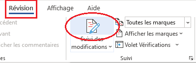
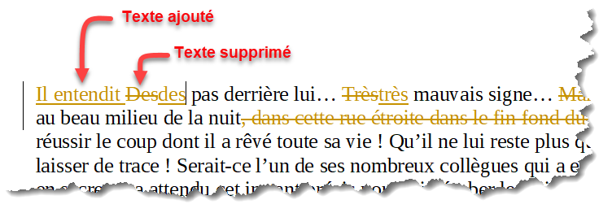
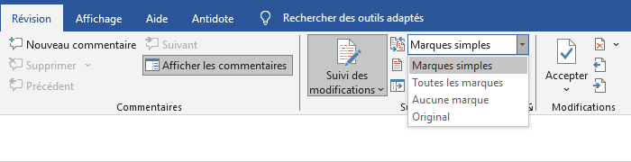
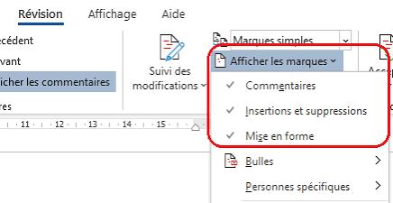
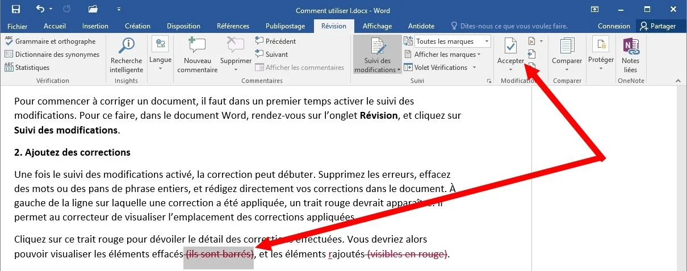
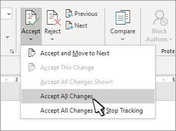

Révision
Suivre, commenter, afficher, examiner, filtrer, accepter et refuser les modifications d’un document Microsoft Word.
Objectifs d’apprentissage
L’onglet Révision facilite la correction et le travail collaboratif. Grâce au Suivi des modifications, Word conserve une trace visible des changements afin que l’auteur du document puisse les examiner avant de décider de les accepter ou de les refuser.
- activer et désactiver le suivi des modifications ;
- identifier les ajouts, suppressions et autres marques de révision ;
- contrôler l’affichage des marques ;
- parcourir les changements d’un document ;
- accepter ou refuser une modification ;
- filtrer les révisions par type ou par relecteur ;
- ajouter, répondre, résoudre et supprimer des commentaires ;
- finaliser un document après une séance de révision.
1. Suivi des modifications
Le Suivi des modifications permet à Word de signaler les changements apportés au document. Lorsque cette fonction est active, les insertions et suppressions restent identifiables au lieu d’être intégrées silencieusement au texte.
1.1 Activer le suivi

- Ouvrez le document à réviser.
- Choisissez l’onglet Révision.
- Dans le groupe Suivi, cliquez sur Suivi des modifications.
- Modifiez ensuite le texte normalement.
- Observez la manière dont Word signale les changements.
Dans cet exemple pédagogique, une expression a été supprimée et une autre a été insérée. Dans Word, la présentation exacte dépend du mode d’affichage choisi.

1.2 Désactiver le suivi
Lorsque vous cliquez de nouveau sur Suivi des modifications, Word cesse d’enregistrer les nouvelles modifications. Les marques déjà présentes ne disparaissent pas pour autant : elles doivent encore être acceptées ou refusées.
2. Afficher les marques
Word permet de contrôler la façon dont les révisions apparaissent à l’écran. Cela aide à lire un document très corrigé sans perdre la trace des changements.

2.1 Afficher ou masquer des types de marques

- Ouvrez Révision.
- Dans le groupe Suivi, ouvrez Afficher les marques.
- Choisissez les catégories de marques que vous souhaitez voir.
- Vérifiez le document après chaque changement d’affichage.
| Élément | Rôle pendant la révision |
|---|---|
| Insertions et suppressions | Permettent d’identifier le texte ajouté ou retiré. |
| Mise en forme | Permet d’identifier certains changements de présentation lorsque Word les suit. |
| Personnes / relecteurs | Permettent de concentrer l’affichage sur les changements de certains auteurs. |
2.2 Affichage en ligne et autres présentations
Selon la version et les paramètres de Word, les révisions peuvent apparaître directement dans le texte ou être présentées de manière plus discrète. Le choix de l’affichage modifie surtout ce que vous voyez, et non la présence réelle des modifications enregistrées.
3. Examiner les modifications
Lorsqu’un document contient plusieurs changements, il est préférable de les examiner méthodiquement plutôt que de parcourir le texte au hasard.
3.1 Parcourir les changements
- Placez-vous dans l’onglet Révision.
- Utilisez les commandes de navigation vers la modification précédente ou suivante.
- Lisez le passage complet avant de prendre une décision.
- Vérifiez si la modification améliore réellement le sens, la précision ou la présentation.
- Décidez ensuite de l’accepter ou de la refuser.
4. Accepter ou refuser les modifications
Une révision reste provisoire tant qu’elle n’a pas été traitée. Accepter valide le changement ; Refuser revient à conserver ou restaurer la version antérieure correspondante.
4.1 Accepter une modification

- Sélectionnez ou placez-vous sur la modification.
- Dans Révision, utilisez la commande Accepter, ou utilisez le menu contextuel lorsque cette option est proposée.
- Vérifiez le résultat dans le texte.
- Passez à la modification suivante.
4.2 Refuser une modification
- Repérez la modification à ne pas conserver.
- Utilisez la commande Refuser.
- Word annule cette proposition de changement.
- Relisez la phrase obtenue pour vérifier sa cohérence.
4.3 Traiter plusieurs modifications

Word peut proposer des commandes permettant d’accepter ou de refuser plusieurs changements. Ces commandes sont pratiques à la fin d’une révision, mais elles doivent être utilisées avec prudence.
| Action | Résultat |
|---|---|
| Accepter | La proposition devient partie intégrante du document. |
| Refuser | La proposition est rejetée et la version correspondante avant cette révision est conservée/restaurée. |
| Masquer | Change uniquement l’affichage ; la révision n’est pas nécessairement traitée. |
5. Filtrer les révisions
Dans un document collaboratif, de nombreuses modifications peuvent être présentes. Le filtrage permet de concentrer l’examen sur une catégorie de changements ou sur un relecteur précis.
5.1 Filtrer par type
Utilisez Révision → Suivi → Afficher les marques pour contrôler les catégories visibles. Vous pouvez, par exemple, vous concentrer sur les insertions et suppressions avant d’examiner d’autres changements.
5.2 Filtrer par relecteur
Lorsque plusieurs personnes ont participé à la révision, Word peut distinguer leurs interventions. L’affichage par personne permet d’examiner les changements d’un relecteur particulier.
6. Gestion des commentaires
Les commentaires permettent de poser une question, proposer une amélioration ou expliquer un point sans modifier directement le contenu du document. Ils sont particulièrement utiles lors d’une relecture collaborative.
6.1 Ajouter un commentaire
- Sélectionnez le mot, la phrase ou le passage concerné.
- Ouvrez l’onglet Révision.
- Cliquez sur Nouveau commentaire.
- Saisissez votre remarque dans la zone de commentaire.
- Publiez le commentaire si votre version de Word affiche un bouton de publication.
6.2 Répondre à un commentaire
Dans un travail collaboratif, un autre utilisateur peut répondre au commentaire afin de poursuivre la discussion sans modifier le texte principal. Utilisez la commande Répondre dans le fil du commentaire, puis saisissez votre réponse.
6.3 Parcourir et afficher les commentaires
Les commandes de l’onglet Révision permettent d’afficher les commentaires et de parcourir les remarques du document. Selon la version de Word, les commentaires peuvent apparaître dans la marge ou dans un volet dédié.
- Affichez les commentaires du document.
- Sélectionnez un commentaire pour identifier le passage auquel il est associé.
- Lisez le fil de discussion avant d’apporter une modification.
- Passez ensuite au commentaire suivant jusqu’à la fin du document.
6.4 Résoudre ou supprimer un commentaire
| Action | Quand l’utiliser ? | Effet |
|---|---|---|
| Répondre | Lorsqu’une discussion ou une précision est nécessaire. | Ajoute une réponse au fil sans modifier le texte. |
| Résoudre | Lorsque la remarque a été traitée et que la discussion est terminée. | Marque la discussion comme traitée, selon la version de Word. |
| Supprimer | Lorsque le commentaire n’a plus à être conservé. | Retire le commentaire du document. |
6.5 Commentaires et travail collaboratif
Utilisez les commentaires pour les questions, les demandes de clarification et les suggestions qui nécessitent une discussion. Utilisez le suivi des modifications lorsque vous souhaitez proposer directement une nouvelle formulation dans le document.
7. Méthode complète de révision
Une procédure organisée réduit le risque de laisser des modifications non vérifiées dans le document final.
- Conserver une copie : gardez une version originale avant une révision importante.
- Activer le suivi : activez le Suivi des modifications avant de commencer les corrections.
- Réviser : corrigez le texte, supprimez les éléments inutiles et ajoutez les informations nécessaires.
- Contrôler l’affichage : choisissez les marques utiles pour votre étape de travail.
- Filtrer si nécessaire : examinez un type de changement ou un relecteur à la fois.
- Examiner : parcourez les modifications dans leur contexte.
- Décider : acceptez ou refusez chaque proposition.
- Vérifier : relisez le document final et assurez-vous que les marques restantes correspondent à votre intention.
8. Bonnes pratiques et erreurs à éviter
| Bonne pratique | Pourquoi ? |
|---|---|
| Activer le suivi avant de commencer une révision collaborative. | Les changements restent identifiables. |
| Lire le contexte avant d’accepter. | Une correction locale peut modifier le sens global. |
| Utiliser les filtres pour les documents très révisés. | L’examen devient plus clair et méthodique. |
| Conserver une copie originale. | Elle permet de revenir à l’état initial si nécessaire. |
| Effectuer une dernière vérification. | Le document remis ne doit pas contenir de révisions involontaires. |
- croire qu’une marque masquée a été supprimée ;
- désactiver le suivi et penser que les anciennes révisions sont automatiquement acceptées ;
- accepter toutes les modifications sans les lire ;
- modifier un document collaboratif sans activer le suivi alors qu’une trace des changements est nécessaire.
9. Activité pratique guidée
Objectif : réaliser un cycle complet de révision dans Word.
Les outils numériques sont utilisé dans plusieurs établissements. Ils remplace les méthodes traditionnelles et garantissent toujours de meilleurs résultats. Les étudiants utilise également des plateformes pour communiquer.
Travail demandé
- Copiez le texte dans un nouveau document Word et enregistrez-le sous le nom Revision_Nom_Prenom.docx.
- Activez Révision → Suivi des modifications.
- Corrigez les accords incorrects dans le texte.
- Remplacez la formulation absolue « garantissent toujours de meilleurs résultats » par une formulation plus nuancée.
- Ajoutez une phrase expliquant un avantage possible des plateformes numériques.
- Supprimez un mot ou une expression que vous jugez inutile et observez sa marque de révision.
- Ajoutez un commentaire sur une phrase pour demander une précision.
- Répondez au commentaire, puis marquez-le comme résolu ou supprimez-le après traitement.
- Utilisez Afficher les marques pour contrôler l’affichage des changements.
- Parcourez les modifications une à une.
- Acceptez au moins deux modifications.
- Refusez volontairement une autre modification afin d’observer le résultat.
- Vérifiez les marques restantes et finalisez le document.
Défi supplémentaire
Travaillez à deux sur une copie du document. Chaque personne effectue quelques changements avec le suivi actif. Utilisez ensuite le filtrage par relecteur pour examiner séparément les interventions.
Critères de réussite
- ☐ Le suivi des modifications a été utilisé.
- ☐ Le document contient plusieurs types de changements.
- ☐ Au moins un commentaire a été ajouté et traité.
- ☐ Les marques ont été affichées et contrôlées.
- ☐ Les modifications ont été parcourues méthodiquement.
- ☐ Au moins deux modifications ont été acceptées.
- ☐ Au moins une modification a été refusée.
- ☐ Le document final a été relu.
10. Questions de compréhension
- Quel est le rôle du Suivi des modifications ?
- Que se passe-t-il lorsque vous désactivez le suivi alors que des révisions sont encore présentes ?
- Quelle est la différence entre masquer une modification et la refuser ?
- Pourquoi est-il utile d’examiner une modification dans son contexte avant de l’accepter ?
- À quoi sert la commande Afficher les marques ?
- Dans quelle situation le filtrage par relecteur est-il particulièrement utile ?
- Quelle est la différence entre accepter et refuser une modification ?
- Pourquoi est-il recommandé de conserver une copie du document avant une révision importante ?
- Quelle est la différence entre un commentaire et une modification suivie ?
- Dans quelle situation est-il préférable d’utiliser un commentaire plutôt que de modifier directement le texte ?
- Quelle différence faites-vous entre répondre, résoudre et supprimer un commentaire ?
- Pourquoi faut-il effectuer une vérification finale avant de remettre un document révisé ?
Synthèse du cours
| Besoin | Commande / action |
|---|---|
| Enregistrer les changements | Révision → Suivi des modifications |
| Contrôler les marques visibles | Afficher les marques |
| Examiner les changements | Navigation entre les modifications |
| Conserver une proposition | Accepter |
| Rejeter une proposition | Refuser |
| Examiner certains changements seulement | Filtrer par type ou par relecteur |
| Ajouter une remarque sans modifier le texte | Nouveau commentaire |
| Poursuivre une discussion | Répondre au commentaire |
| Clore une remarque traitée | Résoudre ou supprimer le commentaire, selon le besoin |